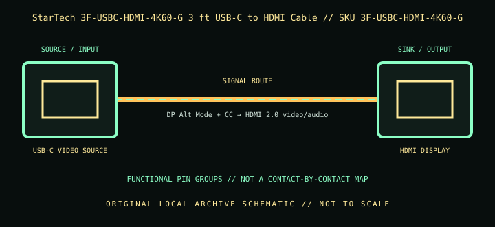

[ INDIVIDUAL COMPONENT // CABLES & ADAPTERS ]
StarTech 3F-USBC-HDMI-4K60-G 3 ft USB-C to HDMI Cable
A 3 ft (0.9 m) unidirectional USB-C-to-HDMI adapter cable with a gripping HDMI connector, for USB-C/Thunderbolt hosts with supported DisplayPort video output.

IDENTIFICATION: Catalog SKU: 3F-USBC-HDMI-4K60-G. Record the complete label, regional suffix, hardware model/revision, and cable length printed on the specimen; nearby model variants are not interchangeable by assumption.
Specifications & connector revisions
| Catalog subcategory | Display cables and adapters |
|---|---|
| Manufacturer / SKU | StarTech 3F-USBC-HDMI-4K60-G 3 ft USB-C to HDMI Cable — 3F-USBC-HDMI-4K60-G |
| Connector ends / length | USB-C male source → HDMI Type-A male display; 3 ft (0.9 m) cable. StarTech product title identifies the HDMI connector’s gripping design. |
| Protocol and revision | StarTech specifies up to 4K at 60 Hz and HDR, with HDMI 2.0-class 18 Gb/s signaling. The source must provide DP Alt Mode video over USB-C, while GPU, OS, display, chroma, HDR, HDCP, and refresh configuration determine the usable mode. |
| Signal path / pinout | USB-C uses negotiated DisplayPort Alt Mode video lanes plus configuration/control; active conversion in the cable presents an HDMI signal at the output. HDMI carries video/audio and control. The 3 ft form is not an HDMI-to-USB-C reverse cable; no internal conversion-chip pinout is implied. |
| Mode and bandwidth caveats | 3 ft (0.9 m) is the cable’s nominal length; keep the integrated cable away from sharp bends and pulling force. The 4K60/HDR figures are conditional maxima, not guaranteed simultaneously at all color depths or host configurations. It is not a USB-C charging cable. |
Compatibility & direction
Connect the USB-C end to a device explicitly supporting video over USB-C/Thunderbolt, then HDMI end directly to an HDMI monitor or TV. It is unidirectional and does not add video to a USB-C data-only port. Check source Alt Mode version, available DP lanes, HDR path, display timing, and content-protection support.
Handling & archival notes
Keep the stated source and sink ends in their specified direction; do not force keyed connectors or use this product as an assumed voltage/pinout substitute for a superficially similar cable. Support the tether during connection, keep contacts clean and dry, and avoid tight bends at molded strain reliefs.
For the archive, photograph both connector faces, labels, packaging SKU, length, and revision. If a mode is tested, record source model/GPU and firmware, sink model/firmware, intermediate adapters, cable run, resolution, refresh rate, chroma/HDR, and whether HDCP succeeds. Test results apply to that exact chain, not all variants.
Manufacturer and standards sources
- StarTech.com — 3 ft USB-C to HDMI 4K60 cable, SKU 3F-USBC-HDMI-4K60-GManufacturer product page for exact SKU, 3 ft length, and advertised video mode.
- StarTech.com — 3F-USBC-HDMI-4K60-G datasheet (PDF)Manufacturer datasheet and certification/compatibility details.
Maximum modes are source-, sink-, firmware-, signal-path-, and revision-dependent. Manufacturer documentation for the exact SKU and hardware model takes precedence over family names and connector appearance.